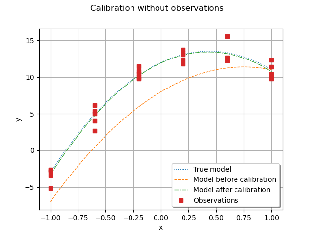

Note
Go to the end to download the full example code
Calibration without observed inputs¶
The goal of this example is to present the calibration of a parametric model which
does not have observed inputs.
We are going to see how to use the Sample class
and create an empty sample.
Indeed, this is mandatory in order to fit within the calibration
framework that is used in the library.
In this example there are, however, several outputs to be calibrated.
import openturns as ot
import openturns.viewer as otv
The vector of parameters is
 .
This model is linear in
.
This model is linear in  and identifiable.
It is derived from the equation:
and identifiable.
It is derived from the equation:

at ![x=-1.0, -0.6, -0.2, 0.2, 0.6, 1.0]() .
In the model, however, the abscissas are fixed and constant.
Therefore, the parametric model has 3 parameters, no input and 6 outputs
.
In the model, however, the abscissas are fixed and constant.
Therefore, the parametric model has 3 parameters, no input and 6 outputs
 .
This produces a set of 5 observations for each output, leading to a total
of 5 (observations per output) * 6 (outputs) = 30 observations.
.
This produces a set of 5 observations for each output, leading to a total
of 5 (observations per output) * 6 (outputs) = 30 observations.
g = ot.SymbolicFunction(
["a", "b", "c"],
[
"a + -1.0 * b + 1.0 * c",
"a + -0.6 * b + 0.36 * c",
"a + -0.2 * b + 0.04 * c",
"a + 0.2 * b + 0.04 * c",
"a + 0.6 * b + 0.36 * c",
"a + 1.0 * b + 1.0 * c",
],
)
outputDimension = g.getOutputDimension()
print(outputDimension)
6
We set the true value of the parameters.
trueParameter = ot.Point([12.0, 7.0, -8.0])
print(trueParameter)
[12,7,-8]
In order to generate the observed outputs, we create a distribution in dimension 3, with Dirac (i.e. constant) marginals.
inputRandomVector = ot.ComposedDistribution(
[ot.Dirac(theta) for theta in trueParameter]
)
The candidate value is chosen to be different from the true parameter value.
candidate = ot.Point([8.0, 9.0, -6.0])
calibratedIndices = [0, 1, 2]
model = ot.ParametricFunction(g, calibratedIndices, candidate)
We consider a multivariate Gaussian noise with zero mean, standard deviation equal to 0.05 and independent copula. The independent copula implies that the errors of the 6 outputs are independent.
outputObservationNoiseSigma = 1.0
meanNoise = ot.Point(outputDimension)
covarianceNoise = [outputObservationNoiseSigma] * outputDimension
R = ot.IdentityMatrix(outputDimension)
observationOutputNoise = ot.Normal(meanNoise, covarianceNoise, R)
print(observationOutputNoise)
Normal(mu = [0,0,0,0,0,0], sigma = [1,1,1,1,1,1], R = 6x6
[[ 1 0 0 0 0 0 ]
[ 0 1 0 0 0 0 ]
[ 0 0 1 0 0 0 ]
[ 0 0 0 1 0 0 ]
[ 0 0 0 0 1 0 ]
[ 0 0 0 0 0 1 ]])
Finally, we generate the outputs by evaluating the exact outputs of the function and adding the noise. We use a sample with size equal to 5.
size = 5
# Generate exact outputs
inputSample = inputRandomVector.getSample(size)
outputStress = g(inputSample)
# Add noise
sampleNoise = observationOutputNoise.getSample(size)
outputObservations = outputStress + sampleNoise
Now is the important part of this script: there are no input observations. This is why we create a sample of dimension equal to 0.
inputObservations = ot.Sample(0, 0)
We are now ready to perform the calibration.
algo = ot.LinearLeastSquaresCalibration(
model, inputObservations, outputObservations, candidate, "SVD"
)
algo.run()
calibrationResult = algo.getResult()
parameterMAP = calibrationResult.getParameterMAP()
print(parameterMAP)
[11.9223,7.04246,-8.2184]
We observe that the estimated parameter is relatively close to the true parameter value.
print(parameterMAP - trueParameter)
[-0.0776552,0.0424638,-0.218396]
Graphical validation¶
We now validate the calculation by drawing the exact function and compare it to the function with estimated parameters.
fullModel = ot.SymbolicFunction(["a", "b", "c", "x"], ["a + b * x + c * x^2"])
parameterIndices = [0, 1, 2]
trueFunction = ot.ParametricFunction(fullModel, parameterIndices, trueParameter)
print(trueFunction)
beforeCalibrationFunction = ot.ParametricFunction(
fullModel, parameterIndices, candidate
)
print(beforeCalibrationFunction)
calibratedFunction = ot.ParametricFunction(fullModel, parameterIndices, parameterMAP)
print(calibratedFunction)
ParametricEvaluation([a,b,c,x]->[a + b * x + c * x^2], parameters positions=[0,1,2], parameters=[a : 12, b : 7, c : -8], input positions=[3])
ParametricEvaluation([a,b,c,x]->[a + b * x + c * x^2], parameters positions=[0,1,2], parameters=[a : 8, b : 9, c : -6], input positions=[3])
ParametricEvaluation([a,b,c,x]->[a + b * x + c * x^2], parameters positions=[0,1,2], parameters=[a : 11.9223, b : 7.04246, c : -8.2184], input positions=[3])
In order to validate the calibration, we compare the parametric function with true parameters at given abscissas with the parametric function with calibrated parameters.
abscissas = [-1.0, -0.6, -0.2, 0.2, 0.6, 1.0]
xmin = min(abscissas)
xmax = max(abscissas)
npoints = 50
palette = ot.Drawable.BuildDefaultPalette(4)
graph = ot.Graph("Calibration without observations", "x", "y", True, "bottomright")
curve = trueFunction.draw(xmin, xmax, npoints).getDrawable(0)
curve.setLineStyle("dotted")
curve.setLegend("True model")
curve.setColor(palette[0])
graph.add(curve)
# Before calibration
curve = beforeCalibrationFunction.draw(xmin, xmax, npoints).getDrawable(0)
curve.setLegend("Model before calibration")
curve.setColor(palette[1])
curve.setLineStyle(ot.ResourceMap.GetAsString("CalibrationResult-PriorLineStyle"))
curve
graph.add(curve)
# After calibration
curve = calibratedFunction.draw(xmin, xmax, npoints).getDrawable(0)
curve.setLegend("Model after calibration")
curve.setColor(palette[2])
curve.setLineStyle(ot.ResourceMap.GetAsString("CalibrationResult-PosteriorLineStyle"))
graph.add(curve)
# Observations
for i in range(outputDimension):
cloud = ot.Cloud(ot.Sample([[abscissas[i]]] * size), outputObservations[:, i])
cloud.setColor(palette[3])
cloud.setPointStyle(
ot.ResourceMap.GetAsString("CalibrationResult-ObservationPointStyle")
)
if i == 0:
cloud.setLegend("Observations")
graph.add(cloud)
view = otv.View(graph)

We notice that the calibration produces a good fit to the data.
Still, we notice a small discrepancy between the true mode and the model
after calibration, but this discrepancy is very small.
Since the model is linear with respect to the parameters  ,
,  ,
,  ,
the
,
the LinearLeastSquares class performs well.
If the model were non linear w.r.t. , , , then the linear least
squares method would not work that well and the parameters would be estimated
with less accuracy.
otv.View.ShowAll()